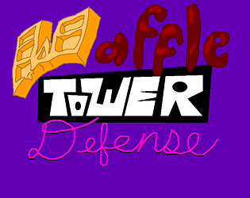
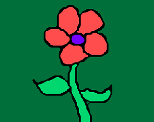
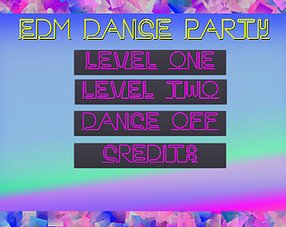
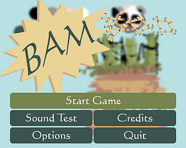
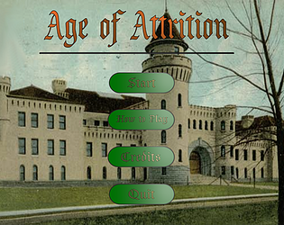

Waffle Tower Defense
Made as the Video Game Development Club project for fall 2018.
I was the lead programmer for Waffle Tower Defense, which was developed over one semester with Godot.
エステティック56709

Made during the Video Game Development Club fall 2017 game jam.
I was one of two programmers who developed エステティック56709 over one weekend with Godot.
Far Out
Made during the 2018 Global Game Jam
I was one of two progammers who developed Far Out over one weekend with Godot.
Happy Meadow
Made during the Video Game Development Club fall 2018 game jam.
I was the only programmer working on Happy Meadow over the course of 24 hours with Godot.
EDM Dance Party
Made as the Video Game Development Club project for spring 2018.
I was the lead programmer for EDM Dance Party, which was developed over one semester with Godot.
The Rise and Fall of Ella V

Made as the Video Game Development Club project for fall 2017.
I was the co-lead programmer for Ella V, which was developed over one semester with Godot.
BAMboo!
Made as the Video Game Development Club project for fall 2016.
I was a gameplay progammer for BAMboo!, which was developed over one semester with Godot.
Age of Attrition
Made as the Video Game Development Club project for spring 2017.
I was the lead programmer for Age of Attrition, which was developed over one semester with Unity.